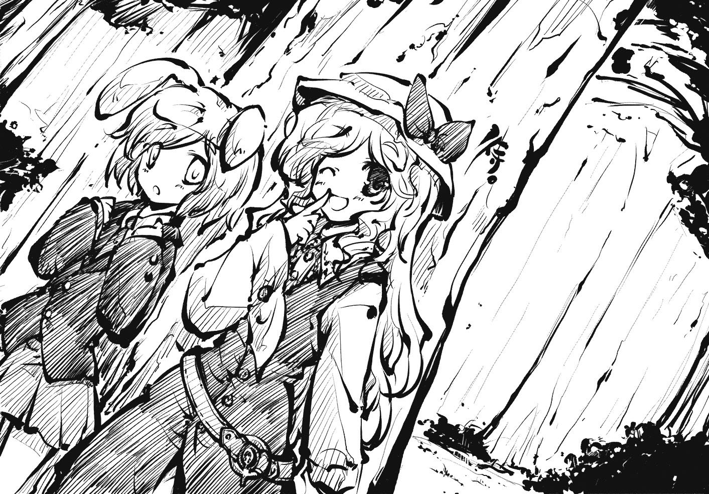

Chapter 6
The Fool’s Sealed Letter
The sky of the Lunar Capital is dark even during the day. It makes me wonder if dawn will never come. Since it’s possible to see without any lights, “dark” may not be appropriate. It would be better to say the sky is just "black."
Space is dark in the first place. So it's only natural for the skies of the planets that float within space to be dark, too.
Just because a planet is bathed in sunlight doesn't mean that it's daytime skies are blue, either. The sun’s light is not blue and neither are the atmospheres surrounding those planets.
Then why is Earth's sky so blue?
That's because the atmosphere bends the rays of light most prone to refraction (violet and blue in the visible light spectrum) and diffuses them, making the sky look blue. Earth's atmosphere has just the right thickness to make the sky look blue. If the atmosphere was a bit thicker, the blue light would’ve completely dispersed and a red sky would result. There is a point in time where the sky on Earth turns red. Depending on the time this occurs, people call it "sunrise" or "sunset."
If the atmosphere was to become even thicker, then even the red light would completely disperse and Earth would become a planet of constant night, since no light would reach its surface. Conversely, if the atmosphere was to be much thinner, the light would come in without bending and the sky would be dark except in the spot where the light shines.
The moon was the latter. The dark daytime sky was now covered in colourful stars.
“-'Stardust Reverie!'”
The human in black flew into the air and shouted something.
Through some incomprehensible process, star-shaped objects rained down indiscriminately in Princess Yorihime's direction.
There shouldn't be anything to fear from such a scattered, blind attack. It was almost like a child swinging its arms in circles while running towards its opponent.
“Hey, it doesn't look like those stars will hurt if one hits...”
"Even if it doesn't hurt, you can't get hit by them. That's why you need to gracefully evade them."
“Hmm, then wouldn’t the one who can shoot more projectiles be at an advantage?”
“There may be limits to how many it is possible to fire at once. I don’t know if it’s because of the law of conservation of energy, or depending on entropy limits though...”
The moon rabbits chattered as if it had nothing to do with them. I think the reason was to minimize the effect on the ecosystem. Anyway, I thought shooting far too many when a single hit was enough was a little...
Princess Yorihime dodged the colorful galaxy without any problem. She was agile like a celestial swimming through the rain and nimble as a rabbit that ran on earth.
The moon rabbits became excited, positive of their victory watching Princess Yorihime’s fight. Everyone seemed to want to stand on the front lines and show off when it was only a while before that they were all fleeing in fright of the vampire. They all seemed to thinking that they were able to win as well, witnessing Princess Yorihime’s strength and feeling her godly presence.
But would I have been able to dodge that attack?
I had heard that the humans of Earth were frail and weak, but the human in front of us looked way too strong for me to handle. Princess Yorihime looked confident but if by some small chance something were to happen, would I be able to take the full force of their attack? And if not, would they invade the Lunar Capital?
“Watch out for stray bullets!”
The moment that I thought I heard the human shout something, a huge star-shaped object grazed my ear and ruffled my hair.
Watching from far away, I thought the stars were made of clusters of light or heat. Differing from my perception, the star felt solid. A cold sweat ran down my back.
What was I doing in the front lines of this raging battle in the first place?
I originally sang songs and lived every day pounding rice cakes. Every day was boring, yet peaceful. During the day we’d continuously pound rice cakes and at the night we’d play shogi while drinking sake. Those days now feel like so long ago.
Although we call them “rice cakes” what was actually in the mortar was not rice but medicine. We were trying to make a medicine called the “Hourai Elixir” that would provide eternal youth and everlasting life.
We do not know the intentions behind this since we rabbits were taught only to pound the medicine.
We were taught that the pounding of the rice cakes was for the atonement of. You could say that all of the work that we moon rabbits do does not benefit us in any way, yet we are made to do it every single day and we have no idea when it may end. Despite pounding away for thousands of years, it feels as if no progress has been made. To others of my kind, this rice cake pounding has become a mere routine that has no meaning behind it.
I didn't want to pound rice cakes for eternity to atone for the sins of someone else. This job did not permit using my head and offered no feelings of accomplishment, only manual labor. I never had to worry about surviving, but it wasn't productive and required no thought. I thought it was a job only suitable for the lowest class.
And that is why I ran away.
I thought that rabbits should have more freedom, that we were more capable than menial labor. Now that I think of it, ones who are skilled but think they can't use their skills in that environment will never amount to anything. I was your garden-variety fool.
Being a fool, I told myself that if my job was not constructive, running away from it was justifiable and society was at fault for being unable to utilize me to the best of my ability. Of course, that was an excuse I told myself to maintain my cool while I was running away.
However, the Lunar Capital was too small and even if I ran, I would be caught right away.
So I fled not only from my job, but also from the capital. I decided without hesitation on escaping to the impure Earth. I heard that one of us moon rabbits had once escaped to Earth so I planned on pursuing her.
-There was a huge roar.
It seemed that the human used a grand technique but was easily overpowered by Princess Yorihime so she was declared the victor. Princess Yorihime held out a large divine mirror which as its name implies reflected light in a godly manner.
“Aww, it would’ve been better if Princess Yorihime had held back a bit.”
The rabbit to my side tried to talk to me. I was still in a panic, not understanding the situation completely, when she added “At this rate, we won’t get a turn at all.”
I sighed as I thought of how just moments ago everybody was running scared of the vampire. “I know, at this rate all the training I did will be for nothing,” I replied, although I'd probably lose.
The other rabbits were also talking tough, but they were probably thinking the same thing I was. They all thought they could do it if given the chance, but when the time came, they wouldn't be able to do a thing. They likely don't have the power to make their own chances.
“Did any of you get hit by stray bullets?”
Princess Yorihime came back with a cool expression.
“That was wonderful. It seemed like you handled her easily.”
“It’s dangerous to be overconfident, but one must retain their composure. You all seem overconfident despite having none.”
“Oh, come on, if it's a human of that level, we can beat her up in a flash.”
“Precisely, you are overconfident.”
A disgusted look appeared on the princess's face.
“Well, it seems that vampire is up next. Well, she will probably be the easiest to beat... but by the way, you there.”
Princess Yorihime looked towards me. I tensed up with the thought that she might tell me to fight the vampire.
“M-Me? No, no... I don’t think that I can...”
“What are you talking about? I want you to run an errand for me.”
She whispered it into my ear.
“Huh? You're entrusting me with such an important task?”
“I think it’s the perfect task for you since you look so reserved. I really meant to do this myself but the ones from Earth are stronger than I expected. Now go, there might not be too much time left.”
I think it was about 3 or 4 months ago that I grew tired of pounding rice cakes, ran from the Lunar Capital and fled to Earth.
There was supposed to be one of us down on Earth as well as some wanted fugitives...
The lunar veil was a mysterious robe that allowed one to fly through the skies. At the same time it made one lose their spirit when they wore it, so the wearer would have no control over themselves. I had little use for it while I lived on the moon.
I took the veil and flew towards the earth. My memories of the journey to Earth are vague.
This veil was made so when a Lunarian on Earth was called back to the moon, they would have no lingering attachments to Earth. In the past there was a certain princess by the name of Kaguya that was imprisoned on Earth. This robe was for when she was to return... supposedly.
Although I do not know the details, Princess Kaguya refused to return to the moon and at the same time a sage of the moon decided to remain with her. Although the whereabouts of the sage and the princess have been unknown for more than 1000 years, they are still wanted criminals.
The reason for that is because the leaders of the search party, Princesses Toyohime and Yorihime, have no intention of capturing them. The people of the Lunar Capital vaguely know about this but since it was nothing that could possibly harm them in the short term, everybody forgot about it.
It was just before I made my escape that a strange rumor began to spread. It was said there was someone planning a coup in the Lunar Capital, the suspect being Lady Yagokoro, who was a criminal on Earth.
I later asked Princess Yorihime why such a rumor was spreading and apparently there was someone who had been summoning the gods of the moon without taking proper measures to do so.
Apparently Princess Yorihime, who had the power to call upon the gods at will, was top on the list of suspects and Lady Yagokoro, who had been a wanted yet uncaptured for so long, was also suspicious.
Thankfully, it appeared that the suspicion had cleared up. This was because a shrine maiden that the vampire brought with her was found to be the one who had been summoning the gods.
She called the Sumiyoshi Sanjin to carry a flying box from Earth to the moon. Apparently that was the cause of the rumor that had spread in the Lunar Capital.
Actually, this wasn't the first time I had met the shrine maiden. We had met once on Earth around the same time the rumor had started.
When I first came to Earth, it was not the ruinous wasteland I had heard about. It was a peaceful place with many beautiful trees.
I don’t know if I was tired from the long journey or if I had hit some space debris, but I fainted as soon as I landed on Earth. That shrine maiden was the one who took care of me after that.
I had no idea that she was one of the ones who planned on invading the moon.
When I was asleep in the shrine, I heard a voice calling me. A voice calling for me using words that no Earthling should be able to pronounce. I was positive that this was the comrade that I'd heard of and left the shrine.
This comrade was the fellow rabbit that had fled from the moon. However, the voice was actually that of the wanted sage, Lady Yagokoro.
From that very moment, my journey had started in a direction that I had never imagined.
I was to return to the Lunar Capital once again but I could not return to the task of pounding rice cakes. It was something that I did out of my own selfishness so I could not protest. In exchange, the task that was placed on me was to be a member of the lunar defense squad.
The defense squad, called the lunar emissaries, was to guard the moon and keep watch over the Earth. The Watatsuki Sisters were the leaders of the defense squad and I learned from Princess Yorihime the ways of battles, etiquette, common knowledge and many other things.
The younger sister of the two, Princess Yorihime was also in command of training the other rabbits. The squad was quite small with fewer than ten members. All of them were inexperienced and probably not that different from me in terms of strength.
None of us had actually experienced warfare, yet Princess Yorihime’s training was harsh and if one were to slack off they would receive a severe punishment. This was probably because she thought to continue Lady Yagokoro's will and devote herself to the Lunar Capital, yet she always had a sense of some impending threat.
In sharp contrast to her younger sister, Princess Toyohime usually read books and took strolls, living her days to do as she alone felt. She will come to us on our days off from training and says, “Let’s train together.” When we tell her that it's our day off, she walks off looking disappointed. Since she only does this on rest days, she probably has no intention to actually train.
Princess Toyohime was quite popular amongst us rabbits. Nothing stern ever came from her mouth, and since she was a quick thinker who was very knowledgeable, she was very interesting to talk to. What made her even more popular was the fact that she’d sneak some treats like peaches to us during our training.
As one would guess, the ones who came to fend off the vampire’s group was Princess Yorihime and us rabbits. I wonder what Princess Toyohime is doing now? Knowing her, she’s probably reading books and singing songs at such an important time. I guess she thought it all right to leave the fighting to Princess Yorihime.
“I have returned, Princess!”
Given the important task from Princess Yorihime, I immediately left the battle ground and returned to the residence of the Watatsuki Sisters in the Lunar Capital.
As expected, the mansion was empty and not even the rabbits that were always training were there. Obviously, everyone had left to battle along with Princess Yorihime.
I went through a brief search through the mansion, but Princess Toyohime was nowhere to be seen. Where could she be? At first, I thought that she would’ve gone with Princess Yorihime, but Princess Yorihime departed for battle without giving any notice to Princess Toyohime.
Princess Yorihime was the one who always taught us about warfare, general studies and manners, but I wonder what she was thinking not giving her sister any word at a time of such crisis? Judging from the fact that nobody mentioned anything to Princess Yorihime about it, I guess it must be how it always is.
Upon arriving in front of Princess Yorihime’s room,
I stuttered “P-Pardon me,”
and opened the door when I knew that there would be nobody there. I was tense probably because it was Princess Yorihime’s room, and the only times anyone was called there personally, it was almost nothing but bad news.
After entering the room I quickly pulled out a pen and paper and began to write.
“Um… 'Long time, no see. How are you doing?' ...or is this too casual?”
The task that Princess Yorihime had requested of me was to write a letter to Lady Yagokoro.
“I knew that me writing in place of Princess Yorihime would be impossible when I’m not even good at handwriting... I guess I should explain first that she was too busy so I’m writing for her.”
I decided to inform Lady Yagokoro of how things had gone and to thank her in my own words.
What I thought when I first met her on Earth, how I was able to deliver the letter safely to my masters, my return to the Lunar Capital without being questioned about why I had fled, and how I ended up living in the house of the Watatsukis...
“'Also, there was a group of invaders from Earth. It’s a silly team consisting of one vampire, three humans and three fairies. You seemed to have expected some form of invasion, but did you know something about this little team?'... Hmm, what else should I write?”
I remembered about the shrine maiden that had nursed me back to health on Earth, although she didn’t notice me during the battle earlier. Well, I guess it was only natural because when I was down on Earth, I was disguised to look like an Earth rabbit.
The shrine maiden was the central person who had caused the clamor on the moon by calling the gods without permission. Although I had mixed feelings about it, I wrote in the letter, “Please give my thanks to the shrine maiden on Earth.”
I read over it many times until the ink dried. I thought it looked very mature for something I'd written. Maybe I could have passed this off as something that Princess Yorihime wrote.
After making sure that the ink was dry, I rolled the paper up and tied it with a cord.
I quickly ran out of the mansion again with the letter.
But this time it was not back to Princess Yorihime's side in battle, but in the completely opposite direction.
I knew it wouldn’t take long for me to reach my destination. As I ran, I recalled what happened when I fled from the moon.
I had been told that Earth, unlike the moon, was a world full of impurity and deceit. So I had thought that it would be would be difficult to even survive unless I constantly kept my guard up, doubted everyone and only trusted myself. That was until Princess Yorihime told me the true meaning of “impurity.”
The "impurity" that the Lunar Capital detested was life and death. They believed Earth was a world where simply living invites death. There were even those who called Earth a land of impurity, where every being had to compete to live, and the Moon a "pure land"[4] where that filth had been purified.
A world without life or death is the most beautiful thing, but it's still different from a world which had nothing in it. A world where one did not need to take from others to live and could live by what they had made themselves. That was said to be an ideal world.
On Earth, life was the greatest thing possible so the fragrance of death became stronger. It was said to be that fragrance of death that brought such a thing as a lifespan. Therefore all that live on the Earth have a lifespan.
The shrine maiden that had nursed me called me a youkai rabbit. I'd heard that a youkai was a supernatural being which was a predator to humans. I was impressed that a human on Earth would even nurse a youkai. I would’ve thought that on the impure Earth, one would kill something that might harm them, especially if it was already injured... Although my veil was confiscated after that...
As much as I found that surprising, that shrine maiden went with the youkai to invade the moon.
Maybe the stories told about Earth and how Earth actually is are quite different. The impression that I got was that humans and youkai probably coexist on Earth.
Moreover, the vampire seemed to be the leader of the group that attacked the moon, but the one who had control over the group seemed to be the shrine maiden. So, I believe that humans can call forth gods and control youkai. Maybe the Lunar Capital had better redraw its power balance chart of Earth.
That was the reason that I thought it would be wise to trust the shrine maiden if I ever I go back to Earth. I thought that rather than everyone from the Lunar Capital stubbornly acting antagonistic towards the humans and youkai of Earth, it may be better to be an ally of the shrine maiden. Then I would be able to easily play on Earth.
“-Oh, is that you, Reisen? Are you running away again?”
I heard a familiar voice. Princess Toyohime’s voice.
“Huh? Princess Toyohime? Where are you? And no, I'm not trying to escape again; I’ve been given an errand by Princess Yorihime... but, what just happened?”
I was staring at a tall tree. I couldn’t see anything since it was so dark. Eerie voices of animals sounded. I could not recognize any of my surroundings. Just where was I?
“Um, where are we?”
“Shh! Something really interesting is about to happen.”
Someone grabbed my collar and I was pulled in the tree’s shadow.
It was Princess Toyohime. Nobody else was with her. It looked as if she was hiding behind the tree in wait for someone to arrive. There was only stillness in the forests that surrounded us.
“Ahh, it’s taking so long I’m beginning to become bored. I should’ve brought some sake with me. That sake that’s been maturing for a thousand years now...”
“Er... Princess Toyohime, what exactly are you waiting for?"
“Nothing special. Yorihime’s having her fun now, right?”
“Right now, she’s having duels with the vampire’s group.”
“Duels?”
“Yes, a one on one match with a special rule. It was something that was suggested by the humans and Princess Yorihime agreed that it was a way to avoid meaningless bloodshed.”
“Hmm, that sounds fun. But what rule would that be?”
“Apparently, the one who defeats the opponent gracefully is the winner.”
“Huh? Gracefully?”
I don’t know what Princess Toyohime imagined but she burst out in laughter.
“Whatever is the matter?”
“Who's deciding what's "graceful" or not? And what do the humans think is "grace" is, for that matter? Are they having a beauty contest or something? It sounds like so much fun.”
“Er, I think my explanation was a little poor. Gracefully, as in not using dirty tricks and such...”
“Hmhmhm... No, I understand what you want to say. Hmm, those humans are talking like Lunarians now... Or perhaps this too is a teaching of a certain someone.”
“This... too?”
Princess Toyohime had said that she had her doubts about what had been happening.
The reason why there was a stir in the Lunar Capital was that someone other than Princess Yorihime had been calling forth the gods without following the proper procedure, but this is not something that anybody can do.
“Oh, that's right. It looks like a shrine maiden of Earth was the one calling the gods. It seems that she was calling Sumiyoshi Sanjin to fly the rocket.”
“Oh, so it was a shrine maiden...”
“Is there something on your mind, Princess Toyohime?”
“Even if it was a shrine maiden that could acquire the power of the gods for a living, they shouldn't be able to call them while skipping the proper rituals... Perhaps somebody taught her the wrong way, or maybe that was on purpose... Hmm, it looks like Yorihime got the better part after all. Oh, and why are you here? To run away?”
“I think I told you a while ago, but I am here on an errand given by Princess Yorihime.”
“An errand?”
I quickly pulled out the letter.
“I, who had been given the letter to Princess Yagokoro, was to write a reply to Lady Yagokoro. After that I was told to go to the Sea of Ingenuity... but to think that I would see you in the Sea of Ingenuity..."
“Oh? A letter to Lady Yagokoro?”
Princess Toyohime snatched the letter from my hand and skimmed through it. While she was reading through her expressions ranged all the way from laughter to anguish. I felt like she was mentally correcting it and I felt embarrassed.
“Hmm, what a childish composition. Well, I won’t blame you since rabbits have no knowledge.”
My face flushed red.
“I can't give such an embarrassing letter to the master. It would be too embarrassing. Reisen, you are to give the letter to her directly.”
“Oh, yes, ma'am, but how would I? ...I mean, I don’t even know where we are.”
There are very few that can easily travel between Earth and the moon. Anybody would be able to go to and from using the Lunar Veil, but it comes with a considerable amount of time and danger. However, Princess Toyohime is special.
Princess Toyohime had the ability to see the sea and the mountain as the same. That ability would tie the seas of the Moon and the mountains of Earth together and make them one and the same place. In other words, that ability made her able to take a great army with her to Earth in a single second, and she was one of the very few Lunarians who had that sort of ability. That sort of ability made her a suitable leader of the lunar emissaries... despite her personality.
“Now that you're with me, all you need to do is watch what is about to happen! Come now, be a little more excited!”
“I’m more nervous than excited, though...”
The landscape around me was astonishingly dark and visibility was low. I heard eerie howling, too. I also noticed that it was very chilly.
It was the exact opposite of the graceful and showy battles fought by the vampire’s team and Princess Yorihime, and for that reason I felt very tense. Where Princess Yorihime was fighting may have been very noisy and gaudy at first glance, but now that I compare it to the place I was in, it may have been very quiet. It was a strange feeling since the whisper of the trees felt very loud, although the volume may have been quiet.
Just what was about to happen?
I couldn’t ask Princess Toyohime since she would cleverly avoid the question, and in the first place it wasn’t the right time to ask such a question.
I suddenly missed my old life from a few months ago, merely pounding rice cakes and singing every day.
Back then, I never had to deal with this nauseous tension. Nor did I feel any fear where I needed to protect myself. I probably would have finished my pounding for the day and gone to drink sake with my friends, complaining about silly things and then going to sleep in a warm futon.
Complaining was just something to get rid of my stress. I was actually happy with that life.
Running away from it all may have been the turning point of my life. I'm not one to seek out change, so this turn of events was not quite welcome.
But I think of what would I be doing, and what I would have done, had I not met Lady Yagokoro on Earth and been sent back to the moon.
Reisen is my current name, but I hear that this was originally the name of the rabbit that had served the Watatsuki family.
I was told that Reisen had fled to Earth and her whereabouts were unknown after that.
But we rabbits have a little ability that lets us communicate with each other no matter how far we are. Our large ears are to catch what other rabbits are thinking. Of course, this not a true means of communication, and it's mostly used to gauge what the others are normally thinking about and to catch rumors floating on the wind.
Through these rumors, it seemed Reisen was captured by Lady Yagokoro and had lost her freedom.
But I know the truth.
Lady Yagokoro did not capture the rabbit that escaped from the moon. She is taking care of it very kindly.
Even me for all my thoughtlessness was able to return to the Lunar Capital and take this job thanks to Lady Yagokoro.
Thinking of that I felt like rewriting the letter that I had written, and adding a line. "Please take care of Reisen, thank you."
The wind stopped and the cold air froze.
“Here it comes,”
Princess Toyohime said in a small but elated voice.
As I looked in the direction Princess Toyohime was looking in,
I saw a beast that I had never seen on the moon before...